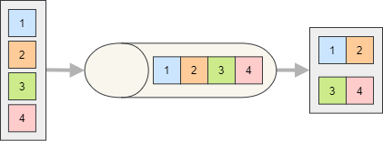

Batch Processing Consumed Messages
Process multiple consumed messages in a single batch to reduce per-message overhead (DB commits, network IO, etc.). Use batching when throughput matters and a small additional latency is acceptable.


Consumer Configuration
Enable batch processing by calling EnableBatchProcessing on the consumer endpoint.
services.AddSilverback()
.WithConnectionToMessageBroker(options => options.AddKafka())
.AddKafkaClients(clients => clients
.WithBootstrapServers("PLAINTEXT://localhost:9092")
.AddConsumer("consumer1", consumer => consumer
.Consume<MyMessage>("endpoint1", endpoint => endpoint
.ConsumeFrom("my-topic")
.EnableBatchProcessing(1000, TimeSpan.FromSeconds(30)))));
Note
Batch processing is currently supported for Kafka only.
Subscribing to Batches
Your subscriber can consume a batch of messages as an IAsyncEnumerable<T> (or IEnumerable<T> / IMessageStreamEnumerable<T>) of either the message type or the IInboundEnvelope<TMessage>.
public async Task HandleAsync(IAsyncEnumerable<MyMessage> messages)
{
await foreach (MyMessage msg in messages)
{
// process each message
}
// commit once for the whole batch
await _db.SaveChangesAsync();
}
public async Task HandleAsync(IAsyncEnumerable<IInboundEnvelope<MyMessage>> envelopes)
{
await foreach (IInboundEnvelope<MyMessage> envelope in envelopes)
{
if (envelope.IsTombstone)
{
// delete the related entity
}
else
{
// create or update the entity
}
}
// commit once for the whole batch
await _db.SaveChangesAsync();
}
Important
All messages in the batch are committed once the subscriber successfully completes. If the subscriber throws, the configured error policy applies to the whole batch.
Note
A batch per topic partition is created by default. You can decide to process all partitions together by calling ProcessAllPartitionsTogether on the consumer configuration and that will create a single batch for the whole topic.
Tip
While the batch is enumerated, the current Activity continues the trace of the message being processed. Avoid buffering the batch (e.g. with ToList()) if the trace of each message must be preserved. See Distributed Tracing and Consumers for details.
Multiple Subscribers
When multiple subscribers handle the same batch (see also Consuming Messages), each of them receives its own stream, with the messages of the batch that match its message type and filters:
- The messages are pushed to all the streams at once, so the slowest subscriber sets the pace.
- The batch is completed and committed only when all the subscribers have returned.
- If one subscriber throws while the batch is still being received, the enumeration of the others is canceled. If it throws afterwards (for example when saving the changes after the loop), the others aren't interrupted and run to completion.
- In both cases the error policy is applied to the whole batch (see Batches, Chunking and Sequences). A retry invokes all the subscribers again, with a new stream starting from the first message of the batch.
Warning
Only one subscriber per batch is supported reliably. If a subscriber stops enumerating before the end of the batch (for example with a break or an early return) while another subscriber is still enumerating, the batch can neither be completed nor aborted.
The partition then stalls and, once its buffer is full (see LimitBackpressure in Consuming Messages), the consumer stops polling and no partition receives new messages. With ProcessAllPartitionsTogether there is a single batch for all the partitions, so the whole consumer stalls right away. The stalled partition also never releases its LimitParallelism slot: with LimitParallelism(1) and multiple partitions, none of the others is processed anymore. The max wait time doesn't reliably release the batch and stopping the consumer, including the graceful shutdown of the application, waits for it as well, so the process has to be terminated and restarted.
If several actions are needed, use a single subscriber and invoke them explicitly from it.